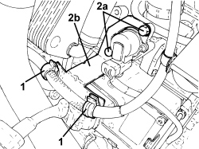
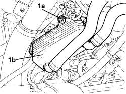
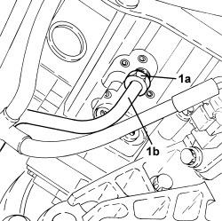
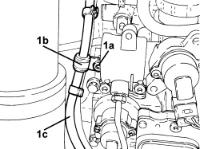
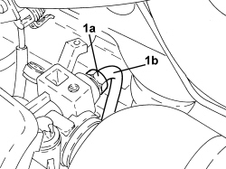
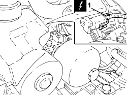
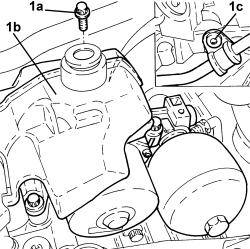
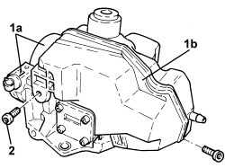

2127C12 HYDRAULIC GEAR SELECTION FLUID RESERVOIR - R.R.
- Path
- Procedures > 21 GEARBOX UNIT > 2127 ELECTRO-HYDRAULIC SELECTION GEARBOX EXTERNAL CONTROLS > 2127C HYDRAULIC GEAR SELECTION SYSTEM > 2127C12 HYDRAULIC GEAR SELECTION FLUID RESERVOIR - R.R.
- Kind
- repair procedure (removal / refitting; the operation number is the code)
- Applies to
- engines: 2.2 JTS; all production periods
- Interactive page
- https://sloeber94.github.io/elrnDB-aBrrSpdr/en/#/946004300
Applies to: engines: 2.2 JTS; all production periods
 Removing
Removing
 Refitting
Refitting- Position the vehicle on a lift.
- Place the gear lever in N.
- Connect an Examiner and run the depressurization procedure.
Op. 5530B52 BATTERY SUPPORT/DRIP TRAY - R.R
Op. 7055B54 UNDER ENGINE PROTECTION/GUARD - R.R.
Op. 2127C22 PIPE FROM HYDRAULIC SPEED SELECTION ACTUATOR UNIT TO FLUID RESERVOIR - R.R.
1. Open the starter motor supply lead retaining clips.
2. Undo the bolts (2a) and remove the wiring mounting bracket (2b).

Applies to: engines: 2.2 JTS; all production periods
1. Unscrew the bolts (1a) securing the engine oil heat exchanger (1b) and move it aside complete with pipes.

Applies to: engines: 2.2 JTS; all production periods
1. Raise the vehicle, undo the connector (1a) for the fluid supply pipe to the valve assembly (1b), valve assembly side.

Applies to: engines: 2.2 JTS; all production periods
1. Undo the bolt (1a) for the intermediate bracket (1b) fixing the rigid oil supply pipe to the valve assembly (1c).

Applies to: engines: 2.2 JTS; all production periods
1. Undo the connector (1a) for the fluid supply pipe to the valve assembly (1b), power unit side.

Applies to: engines: 2.2 JTS; all production periods
1. Disconnect the electrical connection for the electric pump.
Description | Connector | |
|---|---|---|
1 | Robotized gearbox fluid pump |

Applies to: engines: 2.2 JTS; all production periods
1. Undo the bolts (1a) and move the power unit (1b) away as necessary to undo the remaining bolt (1c) for the intermediate bracket fastening the rigid oil supply pipe to the valve assembly.

Applies to: engines: 2.2 JTS; all production periods
1. Remove the power unit (1a) complete with reservoir (1b).
2. Undo the bolts and remove the reservoir (1b) complete with O-ring.

Applies to: engines: 2.2 JTS; all production periods
Refitting
Removing- Place the reservoir in its housing complete with a new O-ring and secure it to the power unit using the bolts.
- Tighten the bolt fixing the intermediate bracket for the rigid oil supply pipe to the valve assembly.
- Place the power unit assembly in its housing and secure it to the gearbox tightening the bolts to the recommended torque.
Component | Fastening | dia | Value (daNm) | Validity |
|---|---|---|---|---|
Power unit | Bolt | - | 1.0 | 2.2 JTS |
- Connect the electrical connection for the electric pump.
- Tighten the connector for the fluid supply pipe to the valve assembly, power unit side.
- Tighten the bolt fixing the intermediate bracket for the rigid oil supply pipe to the valve assembly.
- Tighten the connector for the fluid supply pipe to the valve assembly, valve assembly side.
- Place the engine oil heat exchanger complete with pipes in its housing and secure it to the mounting bracket using the bolts.
- Place the wiring mounting bracket in its housing and secure it using the bolts.
- Position the starter motor supply lead and secure it using the retaining clips.
Op. 2127C22 PIPE FROM HYDRAULIC SPEED SELECTION ACTUATOR UNIT TO FLUID RESERVOIR - R.R.
Op. 5530B52 BATTERY SUPPORT/DRIP TRAY - R.R
Op. 0010T48 HYDRAULIC SYSTEM FOR GEARBOX WITH HYDRAULIC SELECTION - BLEED AIR
Op. 0010T11 ENGINE OIL - CHECK LEVEL AND TOP UP, IF NECESSARY
Topics linked from this page (8)
- 0010T11 ENGINE OIL - CHECK LEVEL AND TOP UP, IF NECESSARY
- 0010T47 HYDRAULIC SYSTEM FLUID FOR GEARBOX WITH HYDRAULIC SELECTION CHECK LEVEL AND TOP UP, IF NECESSARY
- 0010T48 HYDRAULIC SYSTEM FOR GEARBOX WITH HYDRAULIC SELECTION - BLEED AIR
- 2127C22 PIPE FROM HYDRAULIC SPEED SELECTION ACTUATOR UNIT TO FLUID RESERVOIR - R.R.
- 5530B10 BATTERY - R+R
- 5530B52 BATTERY SUPPORT/DRIP TRAY - R.R
- 7055B54 UNDER ENGINE PROTECTION/GUARD - R.R.
- N047 ROBOTIZED GEARBOX ELECTRIC OIL PUMP
Topics that link to this page (7)
- 1004B24 POWER UNIT WITH MANUAL GEARBOX WITH HYDRAULIC SELECTION - R.R.
- 1020D36 FLYWHEEL SIDE OIL SEAL - REPLACE FOR MANUAL GEARBOX WITH HYDRAULIC SELECTION VERSIONS
- 1024B11 ENGINE FLYWHEEL - R.R. FOR MANUAL GEARBOX WITH HYDRAULIC SELECTION VERSIONS
- 1810A28 CLUTCH - R.R. FOR MANUAL GEARBOX WITH HYDRAULIC SELECTION VERSIONS
- 2110A11 MANUAL GEARBOX WITH DIFFERENTIAL - R.R. FOR VERSIONS WITH HYDRAULIC SELECTION
- 2127C10 SUPPORT FOR ELECTROHYDRAULIC CIRCUIT RESERVOIR AND SYSTEM PUMP - R.R.
- 2127C20 PIPE FROM PUMP TO HYDRAULIC SPEED SELECTION ACTUATOR UNIT - R.R.